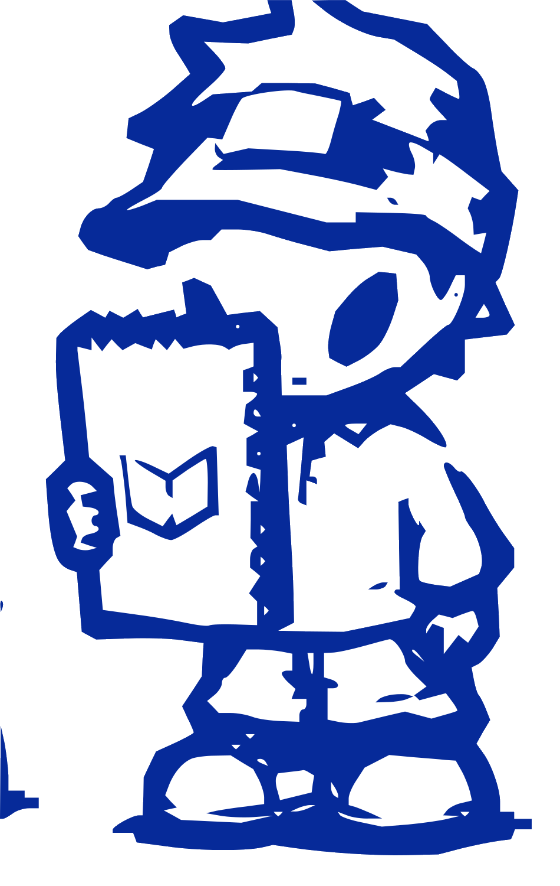
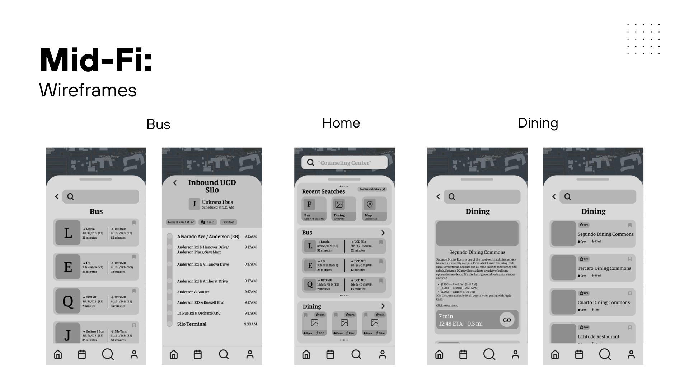
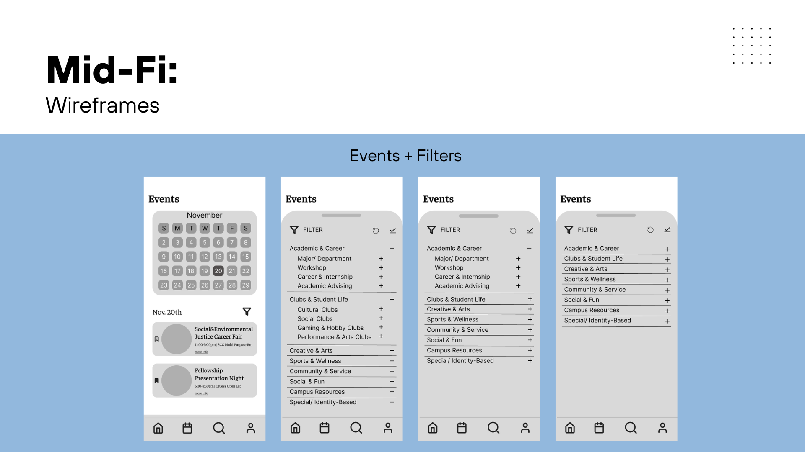
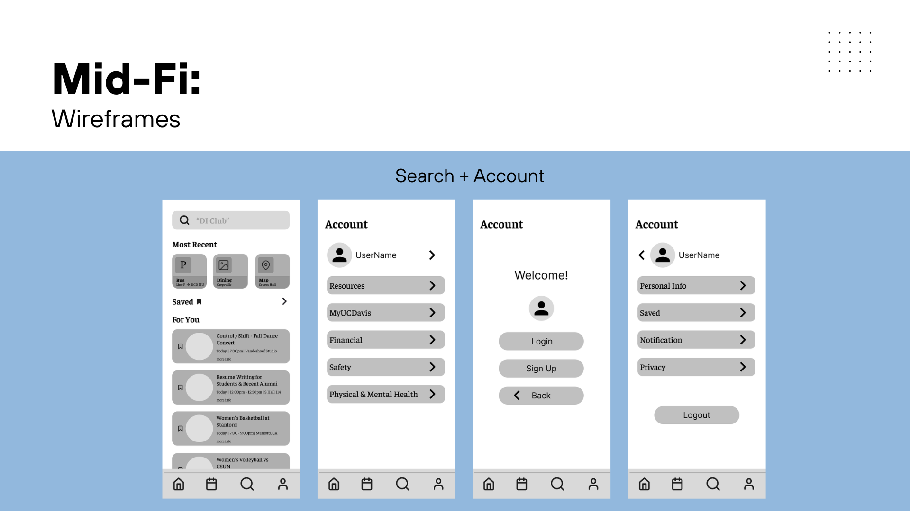

All workPRODUCT DESIGN • MOBILE
UC Davis Mobile Redesign
Reworking the campus app into something students would actually open, built around the features they value.

One app for maps, transit, and campus life
UC Davis Mobile is the campus app for maps, directories, and feeds. As part of the Davis Interactive Fellowship, four of us redesigned it over a six-week sprint. I led the home screen and the bus features. The brief was simple to say and hard to do: make it intuitive enough that students actually open it.
Clunky, unwelcoming, and easy to ignore
Most students had never opened the app, and the ones who had called it "clunky, unwelcoming, and disconnected" from student life. They reached for Google Maps, Apple Maps, and Transit instead. When we asked what would change that, three answers came back over and over: bus routes, events and news, and maps.
Learning from what students already reach for
Rather than guess, I studied the apps students chose instead. Each one taught us something to keep or to beat.
Fix what's there before adding more
Affinity mapping surfaced four themes. The one that reframed the whole project: the features already existed. Bad navigation just made them impossible to find. So the goal shifted from "add more" to "reveal what's already here."
The features were already there. Poor navigation made them impossible to find.
The insight that guided every decision
The things students check most, up front my feature
I simplified the navigation to four tabs students already understand: Home, Events, Search, and Account. The home screen leads with recent searches, the next bus departures, and dining status, so the answers people open the app for are the first thing they see. Bus routes, the top request, got dedicated screens with a color-coded system that matches Unitrans signage and "leave by / arrive by" planning.
no digging
Mid-fi wireframes: the home screen surfaces bus, dining, and recent searches without nested menus.
Events sorted the way students think
The old app grouped events by administrative department. We swapped that for student-centric categories, Academic & Career, Clubs & Student Life, Creative & Arts, Sports & Wellness, and Social & Fun, so browsing feels like campus life instead of a filing cabinet.

student language
Events and filters, reorganized around how students actually describe what they're looking for.
Everything else, one tap away
Search leads with recent and saved items so returning to a bus line or a dining hall takes seconds. Account keeps resources, financial, and safety links together, tucked out of the way but never more than a tap deep.

Search and Account round out the four-tab system.
Every choice had something backing it up.
My biggest takeaway from the sprint
My first real UX project
This one confirmed the field for me. I loved how tightly research connected to design, every decision had evidence behind it, which gave me confidence as a beginner and still shapes how I work. The real constraint was time: balancing the sprint against a full course load forced sharp prioritization, which is why we stopped at a solid mid-fi system rather than pushing everything to hi-fi.
To take it further
- Push the mid-fi wireframes to a polished hi-fi system.
- Run usability testing and align color to the UC Davis brand.
- Add a personalized student dashboard and onboarding.